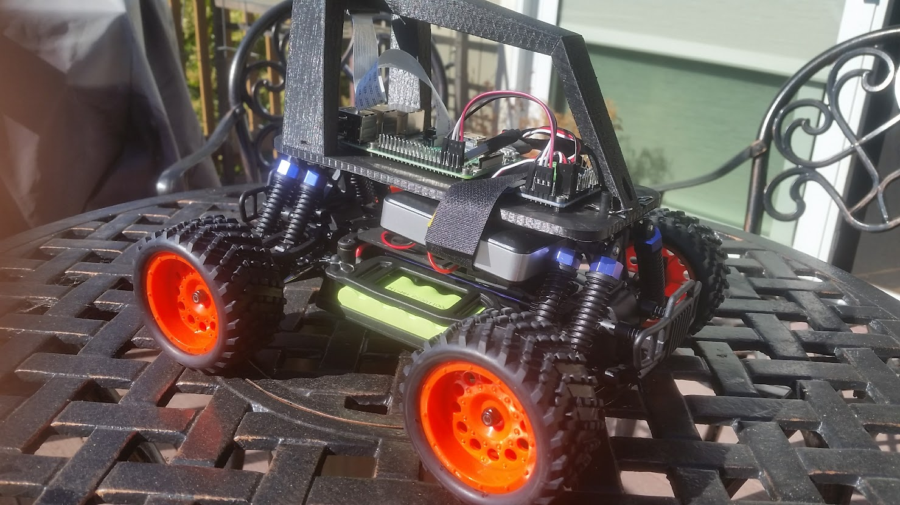

I designed and built a self-driving RC car platform to explore real-time perception and control using embedded compute. This hands-on side project helped me better understand how machine learning models interact with physical systems and what trade-offs exist when deploying them on constrained hardware.
The project was built using the open-source DonkeyCar platform, a well-known framework for autonomous RC vehicles. I followed the base setup to get started quickly, then made modifications to the training loop, camera mount, and control logic to experiment with onboard inference and improve driving stability.
- Perception Stack: Trained a convolutional neural network (CNN) using behavioral cloning to predict steering angles from camera input.
- Hardware Platform: Used a Raspberry Pi 3 with a camera module for onboard processing and real-time control.
- Deployment Experience: Tuned parameters and processing pipeline to run live inference on the Pi and iterated based on track performance.
- Exploration Areas: Experimented with data augmentation and custom driving modes to improve generalization and robustness.
This project was a deep dive into practical ML deployment on edge devices and gave me valuable insight into the challenges of real-time decision-making, perception reliability, and hardware limitations. It also sparked my interest in systems where safety and autonomy intersect — such as fleet safety and ADAS platforms.
Gallery
Photo of the self-driving RC car I built for this project. I designed the layout, mounted the camera, and configured the power and control systems myself using off-the-shelf and 3D-printed components.
Demo Video
This video was recorded at a DIYRobocars meetup. After the official races, all participants lined up their self-driving cars for a fun “battle run,” where the goal was just to see them bump and collide on the track. It was a playful ending to the racing event.